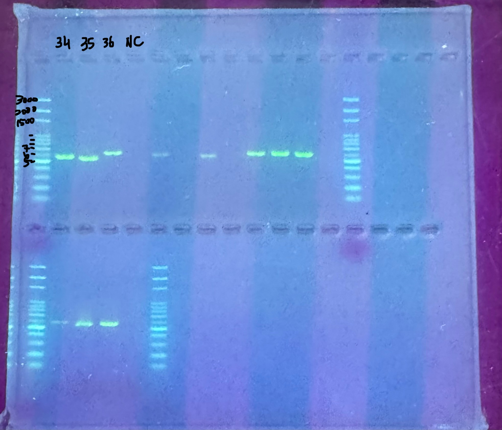
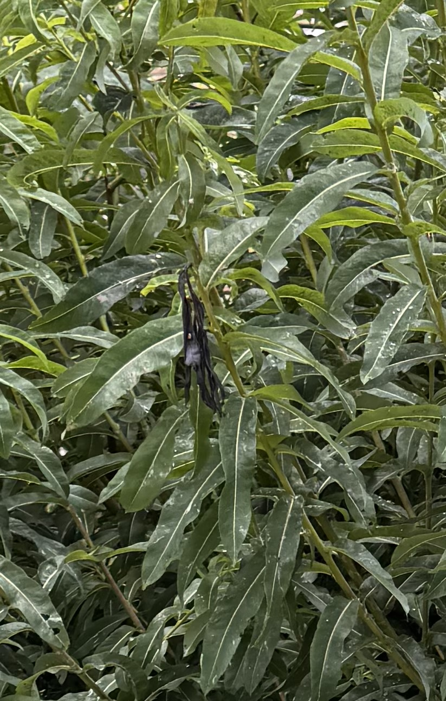
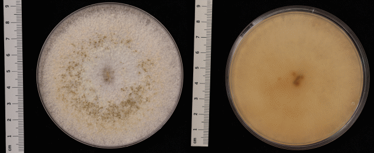
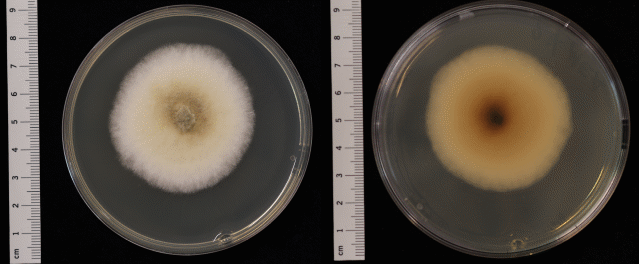
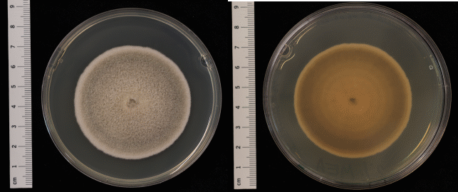

Introduction
In this report, I am going to lead you through the identification offungi living in willows.
What are willows?
Willows are a group of trees that belongs to the genus Salix (Linnaenus, 1753) with about 350 species and numerous hybrids and cultivars. They are familiar sights along rivers, wetlands, and forest edges across the Northern Hemisphere. Willow species that have a broader leaves are referred to as sallow while shrubs with narrow leaves yet are known as osiers. Willow tress are generally tolerable to wide range of environments. However, they can be prone to a number of pests and diseases.

By Bruce Marlin - Own work, CC BY 3.0, uploaded to Wikipedia
Why are willows important?
Willows are used traditionally in many countries and are planted in agricultural lands under short-rotation intensive culture. They contribute to woody biomass production and soil remediation[1]. Almost all structures above soil are utilized in many ways. The European Commission[2] even approved to “extend the scope of the application from Salix alba bark to Salix spp. cortex.”
The woody material of willows are usually more flexible to bend and tender. Therefore, they are traditionally used in handcrafts such as baskets, fishing traps, toys, handles, and sweat lodges. They are also used in the manufacture of paper, boxes, brooms, cricket bats, cradle boards, and other furnitures.
Additionally, willows are applied as traditional herbal medicinal products[3]. Willow bark contains a chemical called salicin, which is similar to aspirin. It reduces pain and fever, yet it would very likely slow blood clotting as well. People commonly use willow bark for back pain, osteoarthritis, fever, flu, muscle pain, and many other conditions, but there is no good scientific evidence to support most of these uses[4]. The cooked willow catkins and inner barks are also famine foods.
The stems are harvested frequently (around every 2 to 4 years[5]) in many places such as Quebec, Canada[6]. The wounds caused by frequent coppicing inevitably opens up entrances for pathogens to enter.
Common fungal diseases on willows
Common fungal pathogens that infect Salix spp. include several species from the genera Botryosphaeria, Melampsora, and Elsinoë. B. dothidea was isolated from stem cankers on Salix magnifica[7]. Rust fungi, such as Melampsora larici-epitea and Melampsora yezoensis, have been identified as significant pathogens affecting various willow species, causing characteristic rust symptoms on leaves and stems[8]. Additionally, Elsinoë murrayae has been reported to cause leaf spots on weeping willow, demonstrating its pathogenicity through significant cell death in infected tissues[9]. Other ascomycetous fungi, including species from the Venturia complex, also contribute to willow diseases, particularly affecting leaves and bark[10].
Objectives
The following experiments serve as an slight glimpse to the golden method for fungi identification in plant pathology. The method applies modern techniques for molecular-based diagnosis of plant-infecting fungi[11].
Material and Methods
The identification of fungi of the infected area is the first step to find out which fungal pathogen is responsible for the disease. To search for the infected area on plants, it is common to look for partial dead or dying tissues, such as patches of yellow or red o black on leaves, and partial or all branches of leaf casting.
Sampling
The Salix spp. sample for this experiment is retrieved from the river side of Dreisam, Freiburg im Breisgau. At sight of an abnormal leaf or branch, the tissue where the abnormal parts border the normal tissue are to be sampled. Then the sample would be stored in a clean bag and transported back to laboratory.
Isolation
The sample is soaked in 70% alcohol for disinfection and further trimmed to less than 1 cm in all dimensions. The tissues pieces are scattered on Petri dishes with minimum essential medium and agarose gel. The mycelia would likely be visible on the gel upon a few days in room temperature depending on the different growing rate of fungus species. It is also possible to speed up the growth of the fungi with incubator. Here, the tissues sampled from Salix spp. was cultured on the dish for a week.
To isolate each fungus, simply cut a square equal or less than 2 mm by 2 mm within a range of a mycelia type with a disinfected scalpel blade. The cube of mycelia and agarose gel is then transferred to a new Petri dish with the mycelia side facing down, attaching to the surface of the new gel. The new Petri dishes are kept in room temperature or incubator for a few days with close observation of contamination or competitors on the dishes. If the isolated fungus forms two distinct colonies on the Petri dishes, they can be further isolated to new Petri dishes until a single colony is isolated on a Petri dish.
In this experiment, only three of the the isolations are proceeded to sequencing. They served as representations and not for a full interpretation of the whole infected tissue.
Sequencing
The isolations are now ready to be extracted for sequencing. Photos are taken on both side of the Petri dish for identification via colony morphological traits. Then, the surface of the colony is scraped off using scalpel blades and transferred to an 1 mL eppendorf tube.
By increasing the copy number of internal transcribed spacer (ITS) region of ribosomal DNA through Polymerase Chain Reaction (PCR), the sequences of the ITS are amplified. The samples are then diluted according to the length of DNA confirmed by electrophoresis and sequenced.
The ITS region is a non-coding region, flanked by highly conserved genes, exhibits sufficient interspecific variability to serve as a robust genetic barcode, particularly in fungi, plants, and certain invertebrates. It is reliable for identifying the species of the fungi samples[12] with the help of the Basic Local Alignment Search Tool (BLAST)[13] online genetic database[14].

Figure 1: An example of electrophoresis. Sample 35 and 36 yielded above 500 base pairs in length and sample 37 was about 600 base-pair-long. Negative control (NC) proved contamination undetected.
Result
The Salix spp. sample had a border at the stem and leaves between the black dying tissues and the green lively tissues (Figure 2). After a week of culturing on the medium, mycelia stretches out from the tissues and was resampled to form isolated colonies on new dishes for another week of cultivation. The sequence of three isolated colonies are identified as following:

Figure 2: A Salix spp. at the shore of Dreisam, Freiburg im Breisgau.
Biscogniauxia nummularia
The morphology of the isolated colony is shown in figure 3. The white filaments fill up the plate quickly and provides the base for fruiting body grow upon (the dark spots in left of figure 3).
The ITS sequence of the sample matches the NCBI Reference Sequence NR_153649.1, which came from the epitype of Hypoxylon nummularium.

Figure 3: the top view (left) and the bottom (right) of Biscogniauxia nummularia isolation.
Didymella heteroderae
The morphology of the isolated colony is shown in figure 4. The centre of the colony is pale brown from the top and dark inside (right of figure 4). White filaments stretches out in equal diameters and forms a puffy edge less dense of hyphae.
The ITS sequence of the sample matches the NCBI Reference Sequence NR_135963.1, which is the sequence of the holotype of Didymella heteroderae.

Figure 4: the top view (left) and the bottom (right) of Didymella heteroderae isolation.
Alternaria destruens
The morphology of the isolated colony is shown in figure 5. The colony forms a slightly raised, circular morphology, with regular margins. The centre is dark grey, fading to whitish toward the colony edge[15].
The ITS sequence of the sample matches 100% to the NCBI Reference Sequence NR_137143.1 , which was cultured and sequenced from the holotype of Alternaria destruens.

Figure 5: the top view (left) and the bottom (right) of Alternaria destruens isolation.
Discussion
What are these fungi?
The three fungi isolated from the Salix spp. sample were all Ascomycetes. Ascomycota, or sac fungi, is the largest phylum of fungi. Many of them are pathogens to plants or animals.

Scarlet elf cap, Sarcoscypha coccinea found at cadnant dingle, north Wales.
The decisive characteristic of Ascomycetes is the presence of ascus, sac-like structures that contain ascospores, where sexual reproduction occurs. Ascomycetes also have hyphae that are divided by walls called septa. They also reproduce asexually with spores called conidia. Cornidia are produced on the outside of a special hyphae, conidiophores. These characteristics can be observed under microscopes.
Biscogniauxia nummularia
Under the kingdom of Fungi, the classification of Biscogniauxia nummularia follows Division Ascomycota, Class Sordariomycetes, Order Xylariales, Family Graphostromataceae, Genus Biscogniauxia. Biscogniauxia nummularia is the type species of the genus described together in 1891 by German botanist Otto Kuntze[16]
Biscogniauxia nummularia is also known as the beech tarcrust. The Latin “nummus”, meaning coin, refers to the coin-like black patches on the infected stems (figure 6). The fruiting body of B. nummularia forms a thick and shiny black crust and is found at all times of the year on deciduous trees. The fungus is saprotrophic, which decomposes wood materials to obtain nutrients.

Figure 6: Beech Tarcrust (Biscogniauxia nummularia) photographed and uploaded to iNaturalist by Stephen James McWilliam with no rights reserved.
Didymella heteroderae
Under the kingdom of Fungi, the classification of Didymella heteroderae follows Division Ascomycota, Class Dothideomycetes, Order Pleosporales, Family Didymellaceae, Genus Didymella.
The species Didymella heteroderae was described only in 2015[17]. There are currently no research specifically addressing Didymella heteroderae in depth[18]. Species of Didymella spp. are known as plant pathogens, yet a human eye infection of Didymella heteroderae was reported on a contact lens user[19].
Alternaria destruens
Under the kingdom of Fungi, the classification of Alternaria destruens follows Division Ascomycota, Class Dothideomycetes, Order Pleosporales, Family Pleosporaceae, Genus Alternaria.
All species of Alternaria spp. are known as plant pathogens, human allergens, and opportunistic infections in immune-deprived patients. Other than pathogens, A. destruens are also used in biocontrol and biotechnology. It was used against pest in agriculture, such as polyphagous mealy-bug, Tinsley (Phenacoccus solenopsis)[20] and dodders (Cuscuta spp.)[21] on fruits, vegetable, and ornamentals including nursery grown woody shrubs[22]. Kaur et al.[23] also assessed A. destruens to be used as antimicrobial and anti-biofilm agents for diabetes patients.
What does the result mean?
The fungi we found on the willow are not common pathogens specific to willow, that could mean that the willow is exposed to large amount of pathogenic sources by the river near busy human activities. Therefore, many fungi are sampled back to the laboratory. We also did not sequence every fungi cultivated from the willow sample, which means we cannot convict these isolated fungi at this stage.
What can we do next?
To proceed in finding the culprit of the dying plant tissue, we can further isolate other fungi from the sample and sequence them. Next, we can apply Koch’s Postulates, that is to find another willow of the same species and infect the branches with the isolated fungi.
🧪 Koch’s Postulates[24]:
- The suspected pathogen must be found in all diseased individuals, but not in healthy ones.
- The pathogen must be isolated and grown in pure culture.
- The cultured organism must cause the same disease when introduced to a healthy host of the same species.
- The organism must then be re-isolated from the newly infected host and confirmed as the same pathogen.
The symptom can be caused by a single fungus or a combination of fungi or other microbiomes such as bacteria or virus. After exploring the pathogenicity of the plant disease, we can finally start to proceed on treatments.
The treatments of plant disease can be as diverse as treating a human. The most economical way applied in forestry and agriculture is simply remove anything that looks wrong. It could be removing branches, trimming, or removing the entire tree or plant. Throughout the development of chemical substance, fungicides are also applied onto lands to stop or slow down fungal growth. Fungicides can be very effective to certain fungi yet may become a burden to the environment and cause irreversible effect upon other creatures.
With the help of other organisms, biocontrol methods are applied to reduce pathogenic fungi as well. However, the design of the method requires longer time and more research funding, which means higher cost. Yet biocontrol methods are also preferred these days due to rising environmental awareness.
Conclusion
Effective fungal treatment relies on early detection, good cultural practices, and targeted use of fungicides or bio-agents. Anthropogenic intervention of plant diseases requires cooperation among scientists, government, and farmers or society. For example, when a tree in a city is infected. The residents first need to acknowledge the abnormal of plants and report it to the local government. Then the scientists identify the disease and the government conduct the treatment. Without any players supporting the treatment, none can be done to help the plants.
References
Altschul, Stephen F., Warren Gish, Webb Miller, Eugene W. Myers, and David J. Lipman. ‘Basic Local Alignment Search Tool’. Journal of Molecular Biology 215, no. 3 (1990): 403–10. https://doi.org/10.1016/S0022-2836(05)80360-2.
‘BLAST: Basic Local Alignment Search Tool’. Accessed 29 July 2025. https://blast.ncbi.nlm.nih.gov/Blast.cgi.
Chen, Q., J.R. Jiang, G.Z. Zhang, L. Cai, and P.W. Crous. ‘Resolving the Phoma Enigma’. Studies in Mycology 82, no. 1 (2015): 137–217. https://doi.org/10.1016/j.simyco.2015.10.003.
Ciszewska-Marciniak, Joanna, Małgorzata Jędryczka, Stanisław Jeżowski, Jerzy Przyborowski, Katarzyna Wojciechowicz, and Elżbieta Zenkteler. ‘Morphology of Uredinia and Urediniospores of the Fungus Melampsora Larici-Epitea Kleb. a Damaging Pathogen of Common Osier (Salix Viminalis L.) in Poland’. Acta Agrobotanica 63, no. 2 (2012): 117–25. https://doi.org/10.5586/aa.2010.039.
Cook, Jennifer C., Raghavan Charudattan, Thomas W. Zimmerman, Erin N. Rosskopf, William M. Stall, and Gregory E. MacDonald. ‘Effects of Alternaria Destruens , Glyphosate, and Ammonium Sulfate Individually and Integrated for Control of Dodder ( Cuscuta Pentagona )’. Weed Technology 23, no. 4 (2009): 550–55. https://doi.org/10.1614/WT-08-019.1.
DeShields, Joseph B., and Achala N. Kc. ‘Morphological and Molecular Characterization of Alternaria Spp. Isolated from European Pears’. Plant Disease 105, no. 9 (2021): 2531–40. https://doi.org/10.1094/PDIS-10-20-2143-RE.
El Aalaoui, Mohamed, Said Rammali, Fatima Zahra Kamal, et al. ‘Biocontrol of Phenacoccus Solenopsis Tinsley Using Entomopathogenic Fungi and Bacteria’. Frontiers in Sustainable Food Systems 8 (October 2024): 1444917. https://doi.org/10.3389/fsufs.2024.1444917.
European Commission. Commission Implementing Regulation (EU) 2015/1107 of 8 July 2015 Approving the Active Substance Carvone, in Accordance with Regulation (EC) No 1107/2009 of the European Parliament and of the Council Concerning the Placing of Plant Protection Products on the Market, and Amending the Annex to Commission Implementing Regulation (EU) No 540/2011. No. 181. Official Journal of the European Union, 2015. https://eur-lex.europa.eu/eli/reg_impl/2015/1107/oj/eng.
European Parliament. Directive 2001/83/EC of the European Parliament and of the Council of 6 November 2001 on the Community Code Relating to Medicinal Products for Human Use. No. 311. Official Journal of the European Union, 2001. https://eur-lex.europa.eu/eli/dir/2001/83/oj/eng.
Hariharan, Ganeshamoorthy, and Kandeeparoopan Prasannath. ‘Recent Advances in Molecular Diagnostics of Fungal Plant Pathogens: A Mini Review’. Frontiers in Cellular and Infection Microbiology 10 (January 2021): 600234. https://doi.org/10.3389/fcimb.2020.600234.
Kaur, Jasleen, Preeti Sharma, Rajvir Kaur, Sukhraj Kaur, and Amarjeet Kaur. ‘Assessment of Alpha Glucosidase Inhibitors Produced from Endophytic Fungus Alternaria Destruens as Antimicrobial and Antibiofilm Agents’. Molecular Biology Reports 47, no. 1 (2020): 423–32. https://doi.org/10.1007/s11033-019-05145-3.
Koch, Robert. ‘Die Ätiologie Der Tuberkulose’. In Berliner Klinische Wochenschrift, edited by J. Schwalbe, vol. 27. 1882. http://dx.doi.org/10.25646/5088.
Kuntze, Carl Ernst Otto. ‘Revisio generum plantarum’. In Revisio generum plantarum, vol. 2. 1891. https://www.biodiversitylibrary.org/page/4266#page/1/mode/1up.
Labrecque, Michel, and Traian I. Teodorescu. ‘High Biomass Yield Achieved by Salix Clones in SRIC Following Two 3-Year Coppice Rotations on Abandoned Farmland in Southern Quebec, Canada’. Biomass and Bioenergy 25, no. 2 (2003): 135–46. https://doi.org/10.1016/S0961-9534(02)00192-7.
Labrecque, Michel, Traian Ion Teodorescu, and Stéphane Daigle. ‘Biomass Productivity and Wood Energy of Salix Species after 2 Years Growth in SRIC Fertilized with Wastewater Sludge’. Biomass and Bioenergy 12, no. 6 (1997): 409–17. https://doi.org/10.1016/S0961-9534(97)00011-1.
Lewis, Kathleen A., John Tzilivakis, Douglas J. Warner, and Andrew Green. ‘An International Database for Pesticide Risk Assessments and Management’. Human and Ecological Risk Assessment: An International Journal 22, no. 4 (2016): 1050–64. https://doi.org/10.1080/10807039.2015.1133242.
MycoBank. ‘Didymella Heteroderae’. Didymella Heteroderae, 2015. https://www.mycobank.org/details/708/545496.
Pesticide Properties DataBase. ‘Alternaria Destruens’. Alternaria Destruens. Accessed 28 July 2025. https://sitem.herts.ac.uk/aeru/ppdb/en/Reports/2471.htm.
Schoch, Conrad L., Keith A. Seifert, Sabine Huhndorf, et al. ‘Nuclear Ribosomal Internal Transcribed Spacer (ITS) Region as a Universal DNA Barcode Marker for Fungi’. Proceedings of the National Academy of Sciences 109, no. 16 (2012): 6241–46. https://doi.org/10.1073/pnas.1117018109.
Spiers, AG. ‘BOTRYOSPHAERIA-DOTHIDEA INFECTION OF SALIX SPECIES IN NEW ZEALAND’. PLANT DISEASE REPORTER 61, no. 8 (1977): 664–67.
Todokoro, Daisuke, Tomoko Miyakubo, Aya Komori, Koichi Makimura, and Hideo Akiyama. ‘A Case of Contact Lens-Induced Fungal Keratitis Caused by Didymella Heteroderae’. Mycopathologia 186, no. 2 (2021): 309–11. https://doi.org/10.1007/s11046-021-00536-2.
Vujanovic, Vladimir, and Michel Labrecque. ‘Potentially Pathogenic and Biocontrol Ascomycota Associated with Green Wall Structures of Basket Willow (Salix Viminalis L.) Revealed by Phenotypic Characters and ITS Phylogeny’. BioControl 53, no. 2 (2008): 413–26. https://doi.org/10.1007/s10526-007-9092-2.
‘Willow Bark: MedlinePlus Supplements’. Accessed 29 July 2025. https://medlineplus.gov/druginfo/natural/955.html.
Yun, Yeo Hong, Geum Ran Ahn, Seong Kwon Yoon, Hoo Hyun Kim, Seung Yeol Son, and Seong Hwan Kim. ‘New Rust Disease of Korean Willow (Salix Koreensis) Caused by Melampsora Yezoensis, Unrecorded Pathogen in Korea’. Mycobiology 44, no. 4 (2016): 335–37. https://doi.org/10.5941/myco.2016.44.4.335.
Zhao, Lijuan, Weitao Zhang, Hongju Xiao, Qin Xiong, and Qiang Cheng. ‘Molecular Identification and Characterization of Elsinoë Murrayae (Synonym: Sphaceloma Murrayae) from Weeping Willow’. Journal of Phytopathology 166, no. 2 (2018): 143–49. https://doi.org/10.1111/jph.12670.